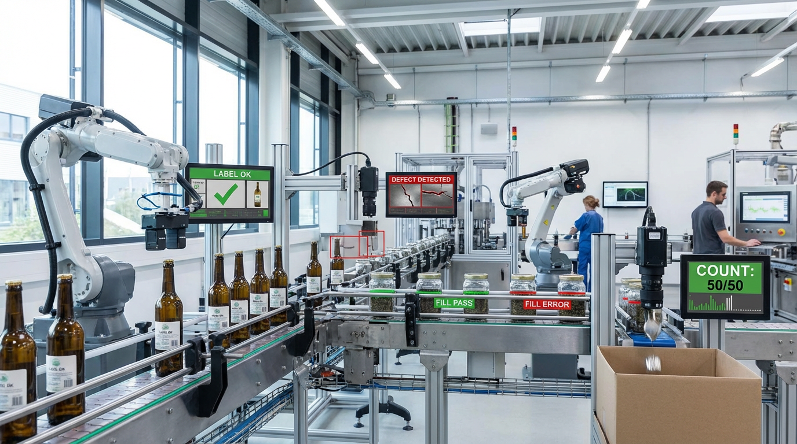

22/01/2026
Görüntü İşleme Çözümlerinin Temelleri
Makalemizde, endüstriyel görüntü işleme çözümlerine odaklanarak, bu teknolojinin temelleri ve endüstride nasıl uygulandığını detaylı bir şekilde ele almaktadır. İlk kısımda, görüntü işleme çözümlerinin temel prensipleri anlatılırken, devamında endüstriyel görüntü işleme çözümlerinin derinlemesine bir analizi sunulmaktadır. Ardından, otomatik denetim ve hata tespiti sistemlerinin çalışma prensipleri ve bu sistemlerin kalite kontrol süreçlerini nasıl iyileştirebileceği üzerinde durulmuştur. Son olarak, kalite kontrol sistemlerinin geleceği ve bu alandaki yeniliklerin potansiyel etkileri tartışılmaktadır. Endüstriyel görüntü işleme çözümleri, üretim hatlarında verimliliği artırmak ve hata oranlarını düşürmek için kritik bir rol oynamaktadır, bu da bu teknolojinin önemini daha da artırmaktadır.

Görüntü İşleme Çözümlerinin Temelleri
Endüstriyel görüntü işleme çözümleri, üretim süreçlerinde verimliliği artırmak ve kaliteyi iyileştirmek için kritik bir rol oynar. Bu sistemler, kamera ve sensörler aracılığıyla toplanan verileri analiz ederek, üretim hatalarının hızlı ve etkili bir şekilde tespit edilmesine olanak tanır. Yapay zekâ destekli görüntü işleme teknolojileri, otomasyonun en üst düzeye çıkarılmasını sağlayarak, süreç optimizasyonunu daha da güçlendirir. Gelişmiş algoritmalar sayesinde, nesneler anında tanınabilir ve sınıflandırılabilir.
Görüntü İşleme Çözümlerinin Ana Faydaları
Üretim sürecinde hataların erken tespiti, kalite kontrol süreçlerinin hızlandırılması, insan hatasının minimuma indirilmesi, geliştirilmiş veri analizi ve raporlama, ürün izlenebilirliğinin artırılması, geliştirilen iş güvenliği önlemleri ile maliyetleri düşürerek verimliliğin artırılması bu çözümlerin sağladığı başlıca faydalardır.
Görüntü analizi ve nesne tanıma teknolojileri, yalnızca sanayi alanında değil, aynı zamanda birçok farklı sektörde भी geniş bir kullanım alanına sahiptir. Özellikle sağlık, güvenlik ve tarım alanlarında bu teknolojiler büyük bir etki yaratmaktadır. Bu çözümler, verilerin doğru ve hızlı bir şekilde analiz edilmesine olanak tanıyarak, stratejik kararların daha etkili bir şekilde alınmasına yardımcı olur. Bu sayede, işletmelerin karar verme süreçleri hızlanırken, genel iş performansları da önemli ölçüde artar.
Endüstriyel Görüntü İşleme Çözümlerinin Derinlemesine Analizi
Endüstriyel görüntü işleme çözümleri, üretim hattı kalite kontrol sistemleri için kritik bir rol oynamaktadır. Bu çözümler, üretim süreçlerinde hem verimliliği artırmak hem de maliyetleri azaltmak amacıyla geniş bir uygulama yelpazesi sunar. Sahip olduğu ileri teknoloji ve otomatikleştirilmiş süreçler sayesinde, hata oranlarını minimuma indirir ve üretim kalitesini sürekli kılar. Aynı zamanda, endüstriyel görüntü işleme, farklı sektörlerdeki farklı gereksinimlere esnek bir şekilde uyum sağlayabilir.
Endüstriyel Çözümler İçin Gerekli Adımlar
İhtiyaçların net bir şekilde tanımlanması, uygun çözüm sağlayıcıların belirlenmesi, görsel ve yazılımsal bileşenlerin entegrasyonu, sistemlerin test edilmesi ve kalibre edilmesi, eğitim ve kullanıcı deneyimlerinin optimize edilmesi, süreçlerin düzenli bakımı ve kontrolü ile performans değerlendirmeleri ve güncellemelerin yapılması başarı için gerekli temel adımlardır.
Teknolojik Yönelimler
Günümüzde yapay zekâ ve makine öğrenimi, endüstriyel görüntü işleme çözümlerinde en çok dikkat çeken teknolojik yönelimler arasında yer almaktadır. Bu teknoloji, sistemlerin öğrendiğini ve kendini geliştirdiğini gözlemleyerek daha akıllı çözümler sunar. Özellikle, gelişmiş algılama ve otomasyon kapasiteleri sayesinde, ileri teknoloji çözümleri arasında ön sıralarda yer almaktadır.
Pazar Gereksinimleri
Farklı sektörler, endüstriyel görüntü işleme çözümlerine yönelik çeşitli gereksinimlere sahiptir. Esneklik ve ölçeklenebilirlik, farklı pazarların sıkça talep ettiği özelliklerdir. Pazar taleplerine yanıt verebilmek adına, üreticiler sürekli olarak yenilikçi ve uyarlanabilir çözümler geliştirmek zorundadır. Bu hem müşteri memnuniyetini artırmak hem de sektördeki rekabet gücünü sürdürmek açısından kritik öneme sahiptir.
Otomatik Denetim ve Hata Tespiti Sistemleri Nasıl Çalışır?
Endüstriyel görüntü işleme çözümleri, üretim süreçlerindeki otomatik denetim ve hata tespiti sistemleri sayesinde maliyetleri azaltır ve kaliteyi artırır. Bu sistemler, üretim hattında insan müdahalesine gereksinimi ortadan kaldırarak, daha hızlı ve daha doğru sonuçlar elde etmeye olanak sağlar. Görüntü analizi ve nesne tanıma teknolojileri, her bir ürünün detaylı incelenmesini ve olası hataların tespit edilmesini kolaylaştırır.
Otomatik Sistemlerin Sağladığı Avantajlar
Zaman tasarrufu sağlar, doğruluk oranını artırır, insana bağlı hataları en aza indirir, üretim maliyetlerini düşürür, sürekli izleme olanağı sunar ve genel verimliliği artırır.
Görüntü işleme çözümleri, endüstrinin farklı alanlarında geniş bir uygulama yelpazesi sunar. Akıllı sistemler, her bir parçayı gerçek zamanlı olarak analiz eder ve herhangi bir sapma olduğunda anında müdahale edilmesini sağlar. Bu teknolojiler, üretim sürecindeki aksaklıkları minimuma indirerek, işletmelerin daha rekabetçi hale gelmesine destek olur.
Hata Tespiti Teknikleri
Otomatik denetim ve hata tespiti sistemleri, çeşitli hata tespiti teknikleri kullanarak operasyonel süreçlerin daha güvenilir olmasını sağlar. İşleme sırasında kullanılan algoritmalar, ürünün boyut, şekil ve renk gibi parametrelerini inceleyerek anormallikleri belirler. Bu süreç, endüstriyel görüntü işleme çözümleri ile daha da ileri seviyeye taşınmaktadır.
Denetim Süreçleri
Endüstriyel ortamda denetim süreçlerinin etkin bir şekilde yürütülmesi, ürün kalitesinin sürekliliğini sağlamanın anahtarlarından biridir. Bu süreçlerde, görüntü analizi ve nesne tanıma teknolojileri kritik bir rol oynar. Sistem, her üretim aşamasında detaylı analizler yaparak kaliteyi kontrol eder ve sürdürülebilir bir üretim süreci sağlar.
Kalite Kontrol Sistemlerinin Geleceği
Endüstriyel görüntü işleme çözümleri, üretim hattı kalite kontrol sistemleri için devrim niteliğinde yenilikler getirmektedir. Bu çözümler, üretim sürecinde insan müdahalesini minimize ederek hataların %90 oranında azaltılmasına olanak tanır. Gelecekte, otomatik denetim ve hata tespiti sistemleri ile daha hızlı ve etkili bir üretim süreci mümkün olacaktır. Bu sistemler, akıllı algılama teknolojileri sayesinde hataların daha çabuk ve doğru bir şekilde tespit edilmesini sağlar.
Kalite Kontrol Sistemlerini İyileştirme Adımları
Üretim sürecinde görüntü işleme çözümlerini entegre edin. Otomatik hata tespiti algoritmalarını sürekli güncelleyin. Yapay zekâ tabanlı analiz araçlarını geliştirin. Çalışanları, yeni teknolojilere adaptasyon süreçleri hakkında eğitin. Sistem performansını düzenli olarak izleyin ve değerlendirin. Geri bildirim mekanizmaları oluşturarak çalışan katılımını teşvik edin. Kalibrasyon ve bakım süreçlerini rutin hale getirin.
Önümüzdeki yıllarda, kalite kontrol sistemleri büyük ölçüde dijitalleşecektir. Endüstriyel görüntü işleme çözümleri, üretim hatlarının daha güvenilir ve verimli çalışmasını sağlayarak maliyetleri düşürecektir. Ayrıca, üretim hattı kalite kontrol sistemleri sayesinde ürün kalitesi artarken, müşteri memnuniyeti de maksimum seviyeye ulaşabilecektir. Tüm bu gelişmeler, endüstrinin dijitalleşmesine katkı sağlayacak ve işletmelerin rekabet gücünü artıracaktır.
Sık Sorulan Sorular
Görüntü işleme nedir ve endüstride nasıl kullanılır? Görüntü işleme, dijital görüntülerin analiz edilmesi ve anlamlandırılması sürecidir. Endüstride kalite kontrol, hata tespiti ve otomasyon gibi alanlarda yaygın olarak kullanılır.
Endüstriyel görüntü işleme çözümlerinin temel bileşenleri nelerdir? Genellikle kamera sistemleri, aydınlatma, görüntü işleme yazılımları ve algoritmaları ile donanım ünitelerinden oluşur.
Endüstriyel görüntü işleme çözümlerinin avantajları nelerdir? Bu çözümler üretim hatalarını minimize eder, kalite güvence süreçlerini iyileştirir, verimliliği artırır ve manuel denetim ihtiyacını azaltır.
Endüstriyel görüntü işleme çözümleri hangi sektörlerde yaygın olarak kullanılır? Otomotiv, elektronik, gıda ve ilaç gibi birçok sektörde kalite kontrol, üretim ve paketleme süreçlerinde aktif olarak kullanılmaktadır.
Endüstriyel görüntü işleme sistemleri nasıl özelleştirilebilir? Sistemler, farklı görüntü işleme algoritmaları ve yazılımları kullanılarak belirli üretim ihtiyaçlarına göre özelleştirilebilir ve entegre edilebilir.
Otomatik denetim sistemleri nasıl çalışır? Otomatik denetim sistemleri, kamera ve sensörler aracılığıyla ürün görüntülerini yakalar, görüntü işleme algoritmaları ile analiz eder ve kalite standartlarına uyumluluğunu değerlendirir.
Hata tespiti sistemleri nasıl uygulanır? Hata tespiti sistemleri, üretim hattında ürünlerin gerçek zamanlı olarak incelenmesi ve belirlenen kriterlere göre hatalı ürünlerin hızlıca tespit edilmesi ile uygulanır.
Kalite kontrol sistemlerinin geleceği nasıl şekilleniyor? Kalite kontrol sistemleri, yapay zekâ ve makine öğrenimi entegrasyonu ile daha akıllı, hızlı ve hassas hale gelmektedir, böylece insan müdahalesini azaltmaktadır.
Endüstriyel görüntü işleme çözümlerinde kullanılan yazılımlar nelerdir? Endüstriyel görüntü işleme çözümlerinde genel olarak OpenCV, MATLAB ve özel geliştirilmiş ticari yazılımlar kullanılmaktadır.
Görüntü işleme çözümleri maliyet açısından nasıl değerlendirilebilir? Başlangıç yatırımları yüksek olsa da uzun vadeli faydaları üretim hatalarının azalması ve iş süreçlerinin optimizasyonu sayesinde maliyetleri düşürmekte ve yatırım geri dönüşünü hızlandırmaktadır.